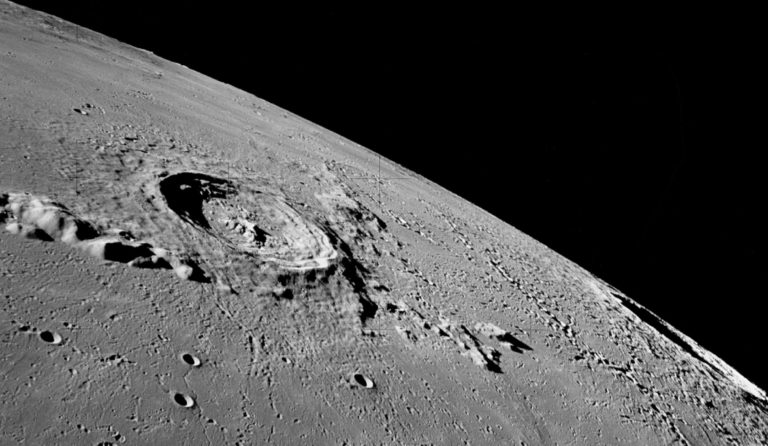

NASA публикует карту воды на Луне
20 марта 2025
NASA опубликовало подробную карту распределения водяного льда на поверхности Луны. Данные были получены в ходе миссии Artemis с помощью спектрометров, установленных на лунном орбитальном аппарате.
Эти данные помогут будущим миссиям эффективнее планировать добычу ресурсов и выбор места посадки. Также они имеют большое значение для научных исследований по изучению истории воды в Солнечной системе.
← Назад